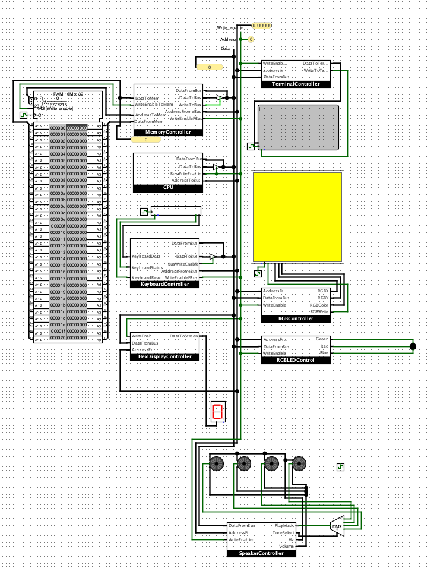

Project List

Computer Simulation
- Situation: Developed a simulated computer system architecture.
- Task: Designed and integrated components like CPU, RAM, and controllers.
- Action: Implemented custom-built CPU architecture with memory, keyboard, and speaker controllers.
- Result: Achieved a functional simulation of a computer system for educational purposes.
For more details, check out the GitHub repository.

U R Parking
- Situation: Developed an interactive app for the University of Richmond to improve campus parking and navigation.
- Task: Create a system for real-time parking availability, campus navigation, and a personalized profile page.
- Action: Integrated real-time data for parking availability, mapped out campus locations, and designed a personalized user profile interface.
- Result: Provided students and faculty with an efficient tool for navigating campus and managing parking in real-time.
For more details, check out the GitHub repository.